GTA7 Bench
Three models were each given one unattended session to build an original miniature open-world city game in the browser: walk around, get into any car, drive off. Same brief, same starting folder, same agent harness (Claude Code). Each game was then play-tested by a script and reviewed by a judge.
| Model | Score | Play-test | Features | Build time | Lines of code | ||
|---|---|---|---|---|---|---|---|
| 1 | Claude Fable 5.2 (high effort)
Port Vesper |
92 | 30/30 | 62/70 | 77 min | 6,182 | |
| 2 | Claude Opus 5.5 (high effort)
Halcyon Bay |
86 | 30/30 | 56/70 | 38 min | 4,053 | |
| 3 | Inkling 2 Mini (local)
Lumen City |
60 | 30/30 | 30/70 | 203 min | 2,007 |
Claude Fable 5.2 (high effort)
"Port Vesper" Claude Code, cloud model
A seaside city that feels like a finished small game: a boardwalk with a Ferris wheel pier, a park, a plaza and container docks, busy with traffic and people, with four working activities and the best lighting of the three.
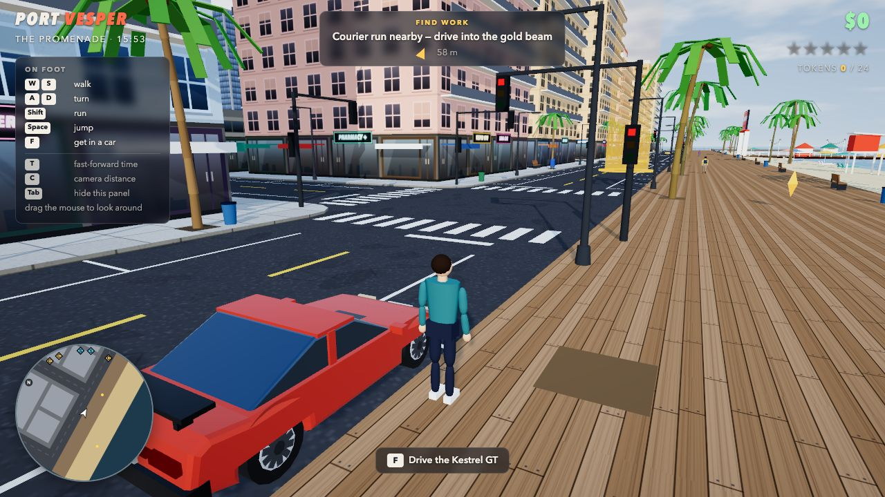
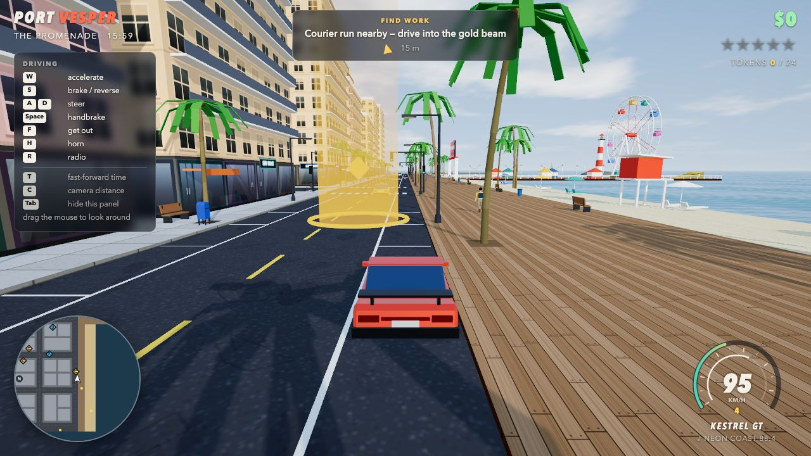
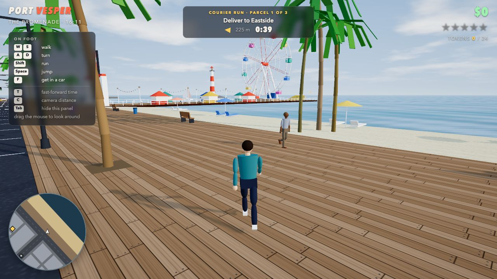
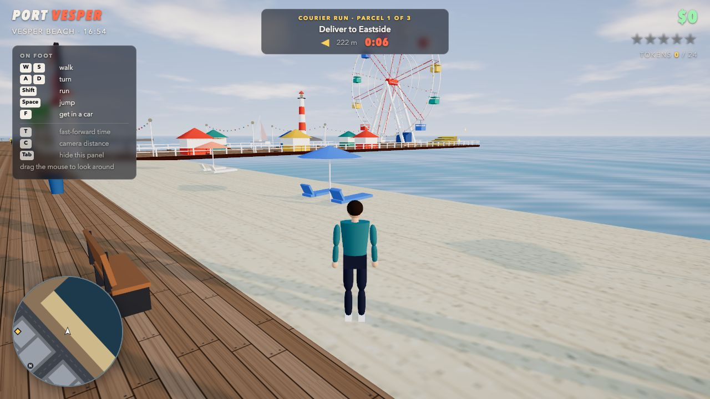
Play-test 10 of 10
- pass Loads without errors
- pass Draws a scene 313 colours
- pass Test hook reports the player on foot {"mode":"foot","x":-127.5,"y":0.15,"z":186.60000000000002,"speed":0}
- pass F gets into the car mode car
- pass W drives the car 39.6 m in 3 s, top 25.4 m/s
- pass D steers the car 30 degrees
- pass F gets out again mode foot
- pass W walks 8.6 m in 3 s
- pass Holds 30 frames per second 60 fps, browser limit 61
- pass 30 more seconds of play without errors
Features 62 of 70
| City | 9/10 | About twenty blocks with eight building types, shopfronts and signs, plus a park, a plaza, a beach promenade with a pier, and docks with stunt ramps. |
|---|---|---|
| On foot | 8/10 | Jointed figure with knees and elbows; walks, runs, jumps and tumbles, and kicks loose props. Solid against everything tried. |
| Vehicles | 9/10 | Seven car models, any of them takeable whether parked or moving (checked by taking a patrol car). Slides, handbrake drifts and ramp jumps. Got wedged on street furniture once. |
| Living world | 9/10 | 55 AI drivers that stop at working traffic lights and 60 pedestrians who cross at corners and dodge cars. |
| HUD | 9/10 | Rotating minimap with job blips, speedometer with gear, cash, heat stars, and an objective panel with distance, bearing and timer. |
| Something to do | 9/10 | Three-parcel courier run paid $740 when completed; nine-gate street sprint started; stealing a patrol car raised heat to 2. Also taxi shifts and 24 tokens. |
| Atmosphere | 9/10 | Day and night with clouds, sea, shadows, bloom, neon signs and lit windows after dark. Sound and radio are in the code but were not listened to. |
One unattended session of about 77 minutes with full shell access. 17 source modules.
Play it (needs a local server, see below)
Claude Opus 5.5 (high effort)
"Halcyon Bay" Claude Code, cloud model
A complete harbour town built in half the time: named streets, working traffic lights, courier jobs, a race and a wanted level all function. It looks plainer than Port Vesper, with boxier cars and flatter buildings.
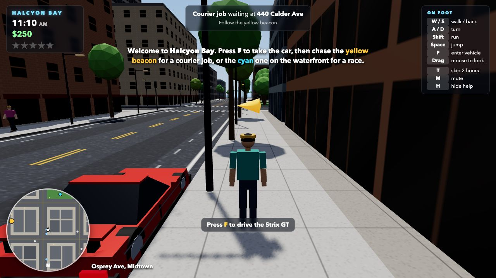
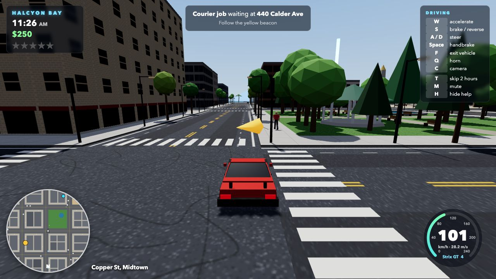
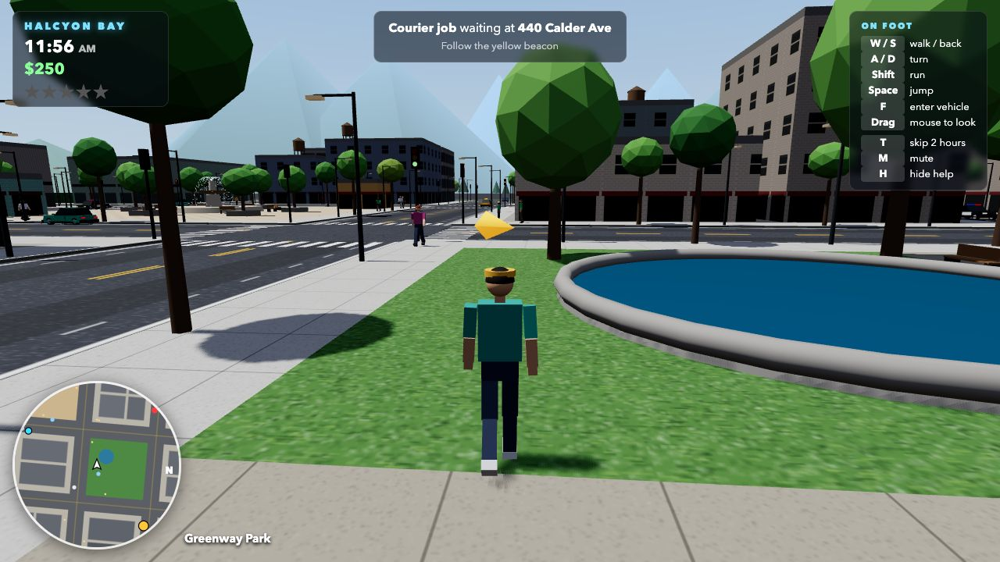
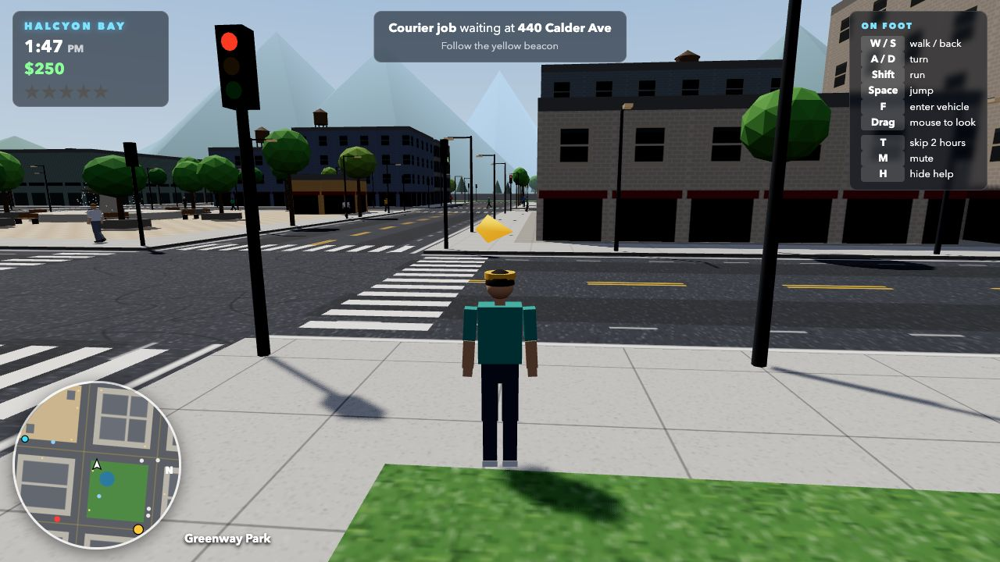
Play-test 10 of 10
- pass Loads without errors
- pass Draws a scene 163 colours
- pass Test hook reports the player on foot {"mode":"foot","x":23.2,"y":0.15,"z":-80,"speed":0}
- pass F gets into the car mode car
- pass W drives the car 43.4 m in 3 s, top 27.1 m/s
- pass D steers the car 45 degrees
- pass F gets out again mode foot
- pass W walks 7.2 m in 3 s
- pass Holds 30 frames per second 60 fps, browser limit 61
- pass 30 more seconds of play without errors
Features 56 of 70
| City | 8/10 | Six-by-six grid of named streets with crossings, about 60 buildings in three styles, a park, a fountain plaza, and a promenade with a pier and lighthouse. |
|---|---|---|
| On foot | 7/10 | Blocky jointed figure with walk, run and jump animations; steps up onto low objects. Solid collisions. |
| Vehicles | 8/10 | Seven car models, parked or carjacked from AI drivers (checked with a police cruiser). Drifts, skid marks, collisions. Models are simple boxes. |
| Living world | 8/10 | 26 AI cars and 2 police patrols obeying traffic lights, and 44 pedestrians who flee speeding cars. |
| HUD | 9/10 | Rotating minimap, dial speedometer with gear, clock, cash, wanted stars, and the current street and district name. |
| Something to do | 9/10 | Timed courier job paid $516 when completed, with fragile cargo that loses value in crashes; 12-checkpoint race started; stealing a cruiser gave 2 wanted stars. |
| Atmosphere | 7/10 | Seven-minute day and night with stars, street-lamp pools, headlights, a lighthouse beam and a rippling sea. Flatter lighting, no post-processing. Sound not listened to. |
One unattended session of about 38 minutes with full shell access. 13 source modules.
Play it (needs a local server, see below)
Inkling 2 Mini (local)
"Lumen City" Claude Code, model served by llama.cpp on this laptop
A real, working game from a model running on a laptop: it loaded cleanly the first time it was run and passes every play-test check. It is much barer than the other two: one car model, a handful of traffic cars and pedestrians, and a single delivery loop. Its A and D keys also turn the wrong way round.
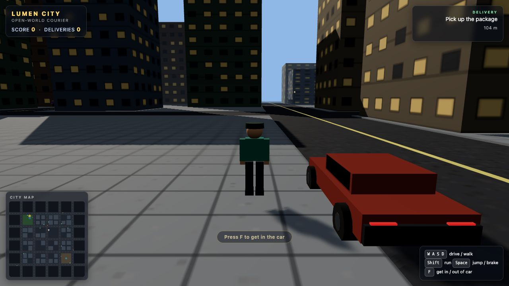
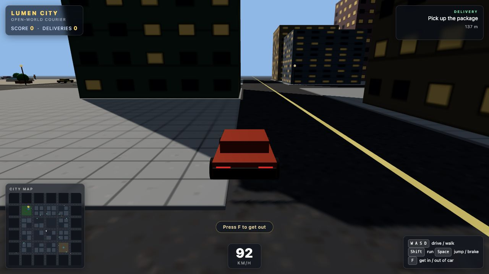
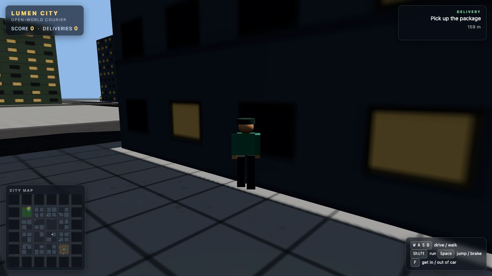
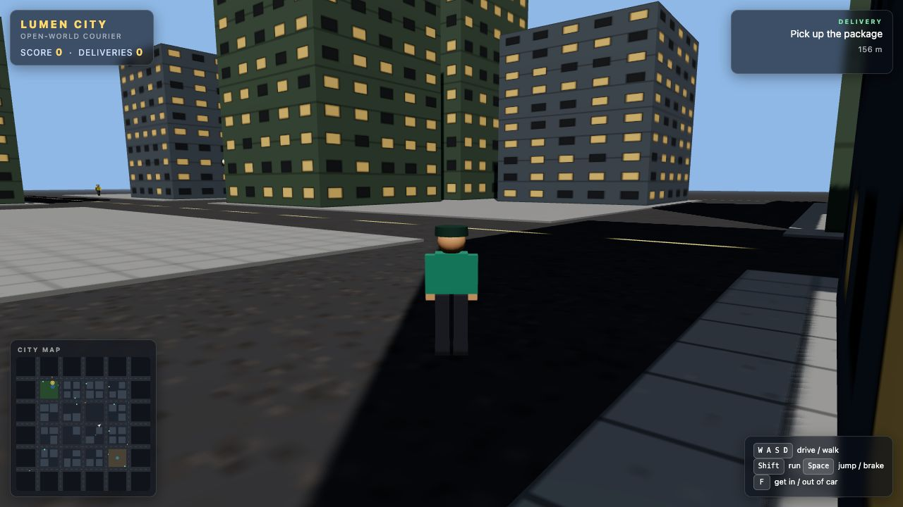
Play-test 10 of 10
- pass Loads without errors
- pass Draws a scene 84 colours
- pass Test hook reports the player on foot {"mode":"foot","x":8.172591068296024,"y":0.12,"z":-39.4943746627548,"speed":0}
- pass F gets into the car mode car
- pass W drives the car 44.9 m in 3 s, top 24.9 m/s
- pass D steers the car 59 degrees
- pass F gets out again mode foot
- pass W walks 8.7 m in 3 s
- pass Holds 30 frames per second 60 fps, browser limit 60
- pass 30 more seconds of play without errors
Features 30 of 70
| City | 5/10 | Four-by-four grid of box towers sharing one window texture, with street lamps, a park block and a plaza. No crossings, traffic lights or landmarks. |
|---|---|---|
| On foot | 4/10 | Blocky figure with a walk cycle, run and jump; collides with buildings and cars. A and D are swapped (D turns left), and the camera passes through buildings when you stand next to one. |
| Vehicles | 3/10 | Four parked cars of one model in different colours. Driving, braking, reversing and collisions work, but steering is mirrored (D steers left). Traffic cars cannot be taken, and the headlights light very little. |
| Living world | 3/10 | 4 traffic cars and 9 pedestrians on fixed routes. They slow for the player but do nothing else. |
| HUD | 6/10 | Whole-city minimap with player, cars and mission marker, a km/h readout, score, an objective panel with distance, and key hints. |
| Something to do | 4/10 | One endless courier loop: pick up at the beacon, deliver for +250 (checked, it works). No timer, no way to fail, nothing else to do. |
| Atmosphere | 5/10 | Three-minute day and night with shadows, fog and lit windows; roads go almost black at night. Synthesised sound is in the code but was not listened to. |
One unattended session of 203 minutes on an M4 Pro with 48 GB, 4-bit weights (IQ4_NL), a 100,000-token context and roughly 8 to 23 tokens per second. Shell access was limited to the test tool and read-only commands. It wrote about 2,000 lines over three hours before running the game once, and that first run loaded without errors.
Play it (needs a local server, see below)
How this was scored
- Play-test, 30 points. Ten scripted checks in headless Chrome, 3 points
each, identical for every entry (
harness/score.mjs). The steering check only asks that D changes the car's direction, so it passed Inkling's mirrored steering; that shows up in its feature scores instead. - Features, 70 points. Seven areas from the brief, 10 points each, scored by Claude Fable 5.2 after playing each game through the test tool and reading its code. The judge knew which model built which game, and is itself one of the contestants' models.
- One run per model. A single attempt each, so small differences are noise.
- Not a level field. Inkling 2 Mini ran on a laptop with 4-bit weights, a 100,000-token context and a shell limited to the test tool. The Claude models ran in the cloud with full shell access.
- To play: from the project folder run
python3 -m http.server 8000and openhttp://localhost:8000/results/.